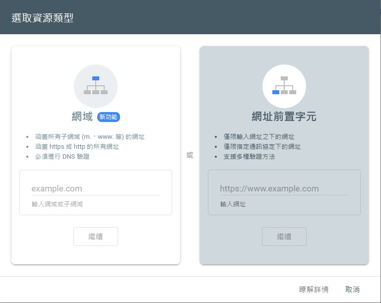
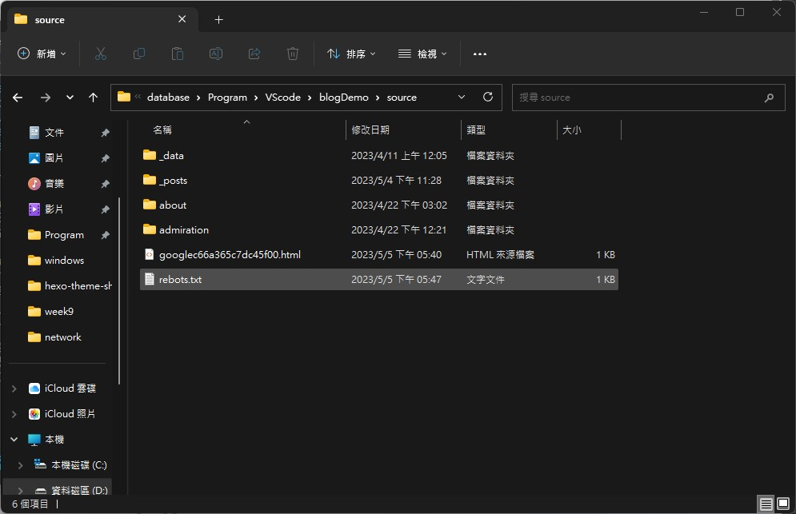

# 什麼是 SEO
SEO 的全稱是 Search Engine Optimization (搜索引擎優化), 目的在於能讓 google 搜索到你的網站，如果不使用的話，在 google 上面就沒辦法搜索到你的網站。因此需要挑整設定。
# 怎麼開始
首先我們先進入這個網站。並且選擇只控制子網域的部分。

然後這邊我們提交 html 的方式。
把他的 html 下載下來並且放到我們的 hexo hexo-folder/soure/ 資料夾底下，並且我們需要修改裡面的內容。

假設你的 html 裡面寫的是…, 此時我們需要增加一個項目。 layout: false , 不然 google 並沒有辦法驗證。
google-site-verification: googlec66a365c7dc45f00.html |
--- | |
layout: false | |
--- | |
google-site-verification: googlec66a365c7dc45f00.html |
此時別忘記了
$ hexo cl | |
$ hexo g -d |
當做到這裡就可以驗證 google page 了。
# sitmap
先下載這個
$ npm install hexo-generator-sitemap --save |
再來去我們的網頁裡面新增 sitmap, 在這邊我們輸入 sitemap.xml。

然後我現在做到這一步，後面應該要等他跑了。等一天吧？
在我等了 2 個小時之後他就跑出來了。
而這邊有一個問題是他的 icon 並沒有跑出來，查了一下發現他需要遵守一些規則。

google 的規則寫這樣說。而我們從規則裡面可以看到一方面他須要 html 還有 icon 大小。而我的問題在於大小不符合。因此我們可以調整一下。
在 shodax 的資料夾裡面 hexo-theme-shokax\layout\_partials\head , 的 head.pug 就可以看的出來。
link(rel="icon" type="image/ico" sizes="48x48" href=url_for(theme.statics + theme.assets + theme.icon.favicon)) | |
if theme.icon.apple_touch_icon | |
link(rel="apple-touch-icon" sizes="180x180" href=url_for(theme.statics + theme.assets + theme.icon.apple_touch_icon)) |

至此我在等一下下，順便聊一下為什麼需要更改 icon, 一方面是比較好看，另外一方面可以增加 SSEO 的評分，畢竟網站的分數越高，他的排名會越前面。